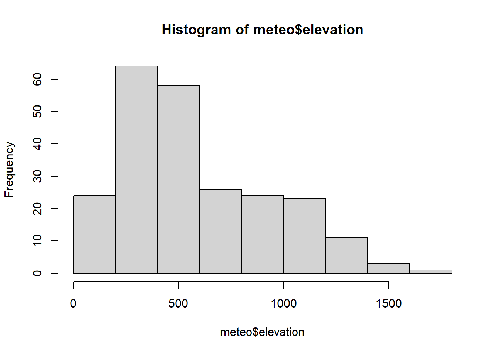

library(tidyverse)
meteo <- read_delim("./data/meteo/meteo.txt", # cambia la ruta según el caso!!!!
"\t", locale = locale(date_names = "es",
decimal_mark = ",",
grouping_mark = "."))4 Regresión lineal en R
Geoestadística i Tècniques d’Observació Global (24/25)
4.1 Antes de ajustar la regresión…
Como hemos visto en teoría, la regresión lineal es el proceso de obtención de una ecuación o fórmula matemática que capture la relación entre una variable respuesta o dependiente y una o varias variables explicativas o independientes. En realidad, esta definición encaja en cualquier tipo de regresión, no sólo la lineal, y la particularidad de la regresión lineal es que asumimos que la relación entre la variable dependiente (que llamaremos y) y la variable explicativa (x) es lineal, es decir, que la ecuación es una recta.
4.2 Nuestros datos
Para esta actividad vamos a trabajar con la tabla (o data frame) llamado meteo, que podemos encontrar en el campus virtual, dentro de la carpeta “Recursos/Datos/meteo”, en un fichero llamado “meteo.txt”. Dicha tabla contiene las siguientes variables climáticas del mes de junio, extraídas de una serie de estaciones meteorológicas en el valle del Ebro:
TavgMAX: temperatura media de las máximas de junio, en ºC
Tavg: temperatura media diaria de junio, en ºC
d_atl: distancia al océano Atlántico (en m)
d_medit: distancia al mar Mediterráneo en m
elevation: altitud sobre el nivel del mar (m)
long: longitud en UTM, sistema de referencia EPSG:23030
lat: latitud en UTM, sistema de referencia EPSG:23030
Para cargar la tabla a nuestra sesión de R debemos guardarla en el ordenador, y después podemos usar el menú “Import Dataset” o copiar y ejecutar el siguiente código:
Una vez el data frame está cargado, podemos echar un vistazo a las variables (y su tipo) tecleando head() o summary():
head(meteo)# A tibble: 6 × 7
TavgMAX Tavg long d_atl d_medit lat elevation
<dbl> <dbl> <dbl> <dbl> <dbl> <dbl> <dbl>
1 20.3 14.6 614350 305753 152147 4489750 1423
2 23.8 16.1 593950 271251 183121 4522150 1100
3 24.4 18.2 567250 279823 204123 4512650 1229
4 20.1 14.0 609150 319257 150357 4475450 1610
5 20.3 13.8 629450 306673 138390 4491350 1402
6 21.9 16.2 666750 317312 103530 4489850 1022summary(meteo) TavgMAX Tavg long d_atl
Min. :18.20 Min. :13.85 Min. :566050 Min. : 43783
1st Qu.:23.00 1st Qu.:16.80 1st Qu.:628925 1st Qu.:132564
Median :25.05 Median :18.80 Median :690750 Median :211925
Mean :24.79 Mean :18.64 Mean :687373 Mean :216455
3rd Qu.:26.90 3rd Qu.:20.55 3rd Qu.:738600 3rd Qu.:293938
Max. :30.50 Max. :23.50 Max. :817550 Max. :425054
d_medit lat elevation
Min. : 670 Min. :4399050 Min. : 2.0
1st Qu.: 92912 1st Qu.:4539325 1st Qu.: 302.0
Median :159376 Median :4638550 Median : 505.5
Mean :159368 Mean :4615250 Mean : 575.7
3rd Qu.:227630 3rd Qu.:4700250 3rd Qu.: 813.8
Max. :325945 Max. :4757850 Max. :1610.0 El primer paso antes de realizar un análisis de regresión - o de ajustar cualquier modelo - entre dos o más variables es realizar un análisis exploratorio de los datos: podemos, por ejemplo, representar un histograma o boxplot de las variables, para comprobar que no hay valores aberrantes, y es muy recomendable también realizar un gráfico de dispersión (o scatterplot, en inglés) para ver la pinta que tiene la relación entre ellas.
En este caso, nos interesa saber la relación que hay entre la elevación (elevation) y la temperatura media del mes de junio (Tavg), veamos la distribución que siguen ambas variables:
hist(meteo$Tavg)hist(meteo$elevation)
Aparentemente, no presentan problemas. Ambas siguen distribuciones bastante normales, sin presencia de valores anómalos, o distribuciones sesgadas. También podemos analizar su distribución mediante boxplots:
boxplot(meteo$Tavg)boxplot(meteo$elevation)Y finalmente, veamos la magnitud de la relación entre ambas a través de su coeficiente de correlación. Para calcularlo usaremos la función cor() de R:
cor(meteo$elevation, meteo$Tavg)[1] -0.8629255También es siempre recomendable evaluar la forma de la relación entre ambas a través de un gráfico de dispersión o scatterplot, para detectar posibles tendencias no lineales:
plot(x = meteo$elevation, y = meteo$Tavg)
Parece que sí puede haber una relación, y que efectivamente tiene aspecto de ser lineal. Vamos a ajustar la regresión para comprobarlo:
4.3 La regresión lineal en R
R tiene incluidas una serie de funciones estadísticas, las principales, que se incluyen en el paquete stats, que viene por defecto instalado en R (no hace falta instalarlo). Para ajustar, o calibrar, regresiones lineales, utilizaremos la función lm. Podemos teclear help("lm") para ver cómo funciona y qué argumentos requiere esta función:
help("lm")lm(formula, data, subset, weights, na.action, method = "qr", model = TRUE, x = FALSE,
y = FALSE, qr = TRUE, singular.ok = TRUE, contrasts = NULL, offset)Vemos que hay numerosos argumentos, pero la mayoría no son necesarios a no ser que queramos una configuración particular. En realidad sólo necesitamos dos:
formula: aquí especificamos qué variables, de las incluidas en nuestra tabla, usaremos para ajustar la regresión. Además, al contrario que en la correlación, debemos definir cuál es la variable dependiente, y cuál o cuales son las variables independientes. Una fórmula tiene este aspecto:var_dep ~ v_indep_1 + v_indep_2 + v_indep_3 +
Como vemos, la var. dependiente y la/s independiente/s se separan por el operador ~
data: especifica el objeto que contiene las variables. Todas las variables definidas en la fórmula deben estar incluidas endata
4.4 Regresión lineal simple
Vamos a ajustar una regresión simple (llamada así porque sólo contiene una variable independiente), en la que evaluaremos el papel de la altitud (elevation) en la temperatura media (Tavg), usando el data frame meteo que hemos cargado antes. Para ello especificamos la fórmula:
lm(Tavg ~ elevation, data = meteo)
Call:
lm(formula = Tavg ~ elevation, data = meteo)
Coefficients:
(Intercept) elevation
21.923433 -0.005711 Es importante tener claro que en el caso de una regresión lineal, tendremos una variable que queremos predecir (variable dependiente,
Tavg) y otra a partir de la que obtendremos las predicciones (var. independiente,elevation). Es decir, queremos predecir la temperatura a partir de la elevación. Debemos tener eso en cuenta a la hora de definir la fórmula.
Ejecutando el código de arriba obtenemos la lista de los coeficientes de regresión (\(\beta_0\) y \(\beta_1\)), que son útiles para construir la ecuación de la recta de regresión. Un coeficiente positivo indica que la relación entre la variable dependiente y la variable independiente es positiva, y al contrario. En este caso, el resultado nos dice que, cada metro que subimos en altitud, la temperatura baja de media 0.0057 grados. O lo que es lo mismo, cada 100 m que subimos, baja 0.57 grados la temperatura Por otro lado, el coeficiente del intercepto puede interpretarse como \(\beta_0\), el valor de temperatura cuando la altitud es igual a 0.
Sin embargo, si ejecutamos lm (o cualquier otra función) sin guardar el resultado, se imprime en la consola pero no se guarda. Para guardarlo, le asignaremos un nombre, el que queramos:
mod_lm <- lm(Tavg ~ elevation, data = meteo)Ahora lo guarda, pero no imprime nada. Si tecleamos el nombre del objeto, lo imprime, y obtenemos lo mismo que antes:
mod_lm
Call:
lm(formula = Tavg ~ elevation, data = meteo)
Coefficients:
(Intercept) elevation
21.923433 -0.005711 O aún mejor, podemos usar la función summary(), que proporciona mucha más información:
summary(mod_lm)
Call:
lm(formula = Tavg ~ elevation, data = meteo)
Residuals:
Min 1Q Median 3Q Max
-3.7830 -0.7583 -0.0210 0.8804 3.4625
Coefficients:
Estimate Std. Error t value Pr(>|t|)
(Intercept) 21.9234334 0.1481962 147.94 <2e-16 ***
elevation -0.0057107 0.0002196 -26.01 <2e-16 ***
---
Signif. codes: 0 '***' 0.001 '**' 0.01 '*' 0.05 '.' 0.1 ' ' 1
Residual standard error: 1.184 on 232 degrees of freedom
Multiple R-squared: 0.7446, Adjusted R-squared: 0.7435
F-statistic: 676.5 on 1 and 232 DF, p-value: < 2.2e-16Veamos que podemos obtener de summary():
El grado de ajuste (o bondad de ajuste) del modelo (
R-squared), calculada a través del estadístico \(F\), y su significaciónLos cuartiles de los residuos, que nos dan una idea de si los residuos se encuentran simétricamente distribuidos a ambos lados del 0 - lo que sería deseable - o no.
La estimación de los coeficientes del modelo, tanto el intercepto como cada una de las variables explicativas. Estos números son los que forman parte de la fórmula de regresión.
La significación de los coeficientes: junto con la estmación del coeficiente, se nos da el cálculo del error estándar y del estadístico \(t\), que se usa para evaluar el p-valor, representado aquí por la columna
Pr(>|t|)
4.4.1 Visualizando la regresión
Como hemos guardado el resultado de la regresión en un objeto (que hemos llamado mod_lm), podemos usarlo, por ejemplo, para hacer gráficas.
Empecemos por plotear como antes la elevación y la temperatura:
plot(meteo$elevation, meteo$Tavg)ahora podemos añadir la ecuación de regresión usando la función abline(). Esta función tiene como argumento un objeto de regresión, y nos devuelve la linea recta calculada mediante la regresión:
plot(meteo$elevation, meteo$Tavg) +
abline(mod_lm)integer(0)En contra de lo que cabría esperar, si ploteamos directamente el objeto de la regresión no nos dará la gráfica de arriba, sino que nos da una serie de gráficos sobre los residuos, que veremos más adelante.
plot(mod_lm)
Sobre la visualización de los datos
Ya hemos comentado varias veces la importancia de visualizar nuestros datos antes de extraer ninguna conclusión de ellos. Hay una cierta tendencia a considerar que una simple visualización no aporta demasiado, ya que sólo podemos llegar a conclusiones cualitativas, mientras que un análisis de correlación o regresión es estadística y por tanto nos proporcionan información numérica que podemos cuantificar (¿es la variable significativa?). Sin embargo, no debemos NUNCA interpretar los resultados de un análisis sin visualizar los datos.
Un ejemplo de esto es el cuarteto de Anscombe, creado en 1973 por el estadístico británico Francis Anscombe. Se trata de cuatro datasets que contienen cada uno una variablexy unay. Podemos acceder a ellos mediante el paquetedatasets, con la instrucciónlibrary(datasets)y tecleando a continuaciónanscombe
Para comprobar qué tiene de particular este dataset, realizad lo siguiente:
1. Calculad la media y desviación típica de todas lasx, y de todas lasy
2. Calculad la correlación entrexeypara los cuatro datasets
3. Ajustad un modelo lineal para cada par dexey
4. Representad visualmente cada pareja dexey
¿Qué observamos?
4.4.2 Haciendo predicciones a partir de nuestro modelo
Uno de los objetivos principales de la regresión es conocer la ecuación que relaciona la variable dependiente con la independiente, de manera que podamos predecir, para cualquier valor de \(x\), cual sería el valor de \(y\) esperado.
Para hacer predicciones, podríamos simplemente construir una nueva variable usando los coeficientes obtenidos de la regresión:
coef(mod_lm) (Intercept) elevation
21.923433399 -0.005710663 predicciones <- 21.923433 - 0.005711*meteo$elevation
predicciones [1] 13.79668 15.64133 14.90461 12.72872 13.91661 16.08679 16.88633 17.19472
[9] 14.45344 15.15019 18.55965 18.94229 21.24382 21.79779 21.79779 21.46655
[17] 21.80350 17.26326 21.78637 14.19645 15.37863 16.06395 16.25241 16.44658
[25] 14.29925 14.53340 19.54195 20.82121 15.44716 20.51282 20.43286 21.91201
[33] 21.72355 21.84919 21.02109 21.80921 21.42658 15.36149 21.28951 19.43344
[41] 20.31293 18.97085 16.97771 17.33179 18.63961 19.58192 19.48484 20.30151
[49] 14.99028 15.16732 16.52083 16.84635 16.82351 16.93202 17.31466 17.34321
[57] 16.11535 16.27525 17.50312 17.92573 17.82294 19.15360 19.42773 17.78867
[65] 19.02796 18.31979 19.31922 18.59392 16.05824 17.88004 18.26268 18.91374
[73] 19.19357 19.47341 18.45115 18.95942 19.80465 20.25582 18.37690 18.37690
[81] 18.77096 19.02224 18.78809 19.38775 18.61105 18.91945 18.94229 19.06793
[89] 19.15360 16.85206 16.92060 20.05594 20.20442 20.33006 20.43286 20.31864
[97] 20.43286 20.31864 17.86291 19.57050 19.94743 20.30722 19.30208 19.69043
[105] 19.69043 20.62704 17.38890 19.45628 20.35291 17.61734 19.48484 20.31864
[113] 19.44486 20.71841 17.67445 15.60136 17.75440 18.43972 16.13819 14.49913
[121] 15.13876 14.82466 17.60021 19.47912 16.99484 18.52539 19.73041 19.95314
[129] 18.51397 20.60419 18.39403 20.74126 20.73554 14.29925 15.90975 17.09193
[137] 16.99484 17.53167 16.82922 18.03424 18.99369 19.17073 18.78238 18.73669
[145] 19.73041 17.49741 19.75896 19.86747 19.71328 20.41573 20.53566 20.68415
[153] 19.75896 19.74183 21.05536 17.12619 17.02911 18.77667 16.50369 16.51512
[161] 18.62247 20.14731 20.33577 20.70699 18.47970 14.69331 15.68702 16.09250
[169] 14.95601 18.19415 19.31922 20.15873 21.16958 21.09534 20.39860 18.97656
[177] 19.98740 20.79265 20.86119 20.31864 15.74413 18.97656 18.89660 19.05651
[185] 18.69101 12.87150 19.12504 18.26839 18.50825 19.45628 20.05022 20.00454
[193] 20.07307 17.66874 20.51282 20.56993 19.26782 19.74754 18.83378 20.52995
[201] 20.52995 18.88518 16.08679 19.42773 19.86747 19.85034 20.18158 19.75896
[209] 19.81036 19.81036 20.09591 20.55850 20.15873 20.34720 21.15816 19.23355
[217] 17.84578 18.93087 20.23298 19.04509 20.87261 19.39346 21.75210 19.10220
[225] 21.73497 19.86176 20.64417 20.23298 21.60933 15.29296 16.12106 16.07537
[233] 16.19530 15.47571Sin embargo, R incluye la función predict() que hace esto por nosotros automáticamente, lo cual es muy útil sobre todo en el caso de regresiones múltiples. predict() necesita que le demos dos inputs:
- un objeto de regresión (en este caso
mod_lm) - una tabla o data frame que contenga todas y cada una de las variables explicativas usadas para ajustar el modelo
Lo que hace predict() es, para cada fila de la tabla que le indiquemos, calcular el valor de \(y\) usando los valores de las diferentes \(x\) para esa fila y los coeficientes estimados por el modelo. En el caso de la regresión simple, mod_lm calculará el valor de temperatura media para cada valor de altitud que contenga la tabla:
predict(mod_lm, meteo) 1 2 3 4 5 6 7 8
13.79716 15.64170 14.90503 12.72927 13.91708 16.08714 16.88663 17.19500
9 10 11 12 13 14 15 16
14.45389 15.15059 18.55985 18.94247 21.24386 21.79780 21.79780 21.46658
17 18 19 20 21 22 23 24
21.80351 17.26353 21.78638 14.19691 15.37901 16.06429 16.25275 16.44691
25 26 27 28 29 30 31 32
14.29970 14.53384 19.54209 20.82128 15.44754 20.51290 20.43295 21.91201
33 34 35 36 37 38 39 40
21.72356 21.84919 21.02115 21.80922 21.42661 15.36188 21.28955 19.43358
41 42 43 44 45 46 47 48
20.31303 18.97102 16.97800 17.33206 18.63980 19.58206 19.48498 20.30161
49 50 51 52 53 54 55 56
14.99069 15.16772 16.52115 16.84665 16.82381 16.93231 17.31493 17.34348
57 58 59 60 61 62 63 64
16.11569 16.27559 17.50338 17.92597 17.82318 19.15376 19.42787 17.78891
65 66 67 68 69 70 71 72
19.02813 18.32001 19.31937 18.59412 16.05858 17.88028 18.26290 18.91391
73 74 75 76 77 78 79 80
19.19374 19.47356 18.45135 18.95960 19.80478 20.25592 18.37711 18.37711
81 82 83 84 85 86 87 88
18.77115 19.02242 18.78828 19.38790 18.61125 18.91962 18.94247 19.06810
89 90 91 92 93 94 95 96
19.15376 16.85236 16.92089 20.05605 20.20452 20.33016 20.43295 20.31874
97 98 99 100 101 102 103 104
20.43295 20.31874 17.86315 19.57064 19.94754 20.30732 19.30224 19.69056
105 106 107 108 109 110 111 112
19.69056 20.62711 17.38917 19.45643 20.35300 17.61759 19.48498 20.31874
113 114 115 116 117 118 119 120
19.44501 20.71848 17.67470 15.60173 17.75465 18.43993 16.13853 14.49957
121 122 123 124 125 126 127 128
15.13917 14.82508 17.60046 19.47927 16.99513 18.52559 19.73054 19.95325
129 130 131 132 133 134 135 136
18.51417 20.60427 18.39424 20.74133 20.73562 14.29970 15.91011 17.09221
137 138 139 140 141 142 143 144
16.99513 17.53193 16.82952 18.03447 18.99386 19.17089 18.78257 18.73688
145 146 147 148 149 150 151 152
19.73054 17.49767 19.75909 19.86759 19.71341 20.41582 20.53574 20.68422
153 154 155 156 157 158 159 160
19.75909 19.74196 21.05541 17.12648 17.02940 18.77686 16.50401 16.51544
161 162 163 164 165 166 167 168
18.62267 20.14742 20.33587 20.70706 18.47990 14.69373 15.68739 16.09285
169 170 171 172 173 174 175 176
14.95642 18.19437 19.31937 20.15884 21.16963 21.09539 20.39869 18.97673
177 178 179 180 181 182 183 184
19.98752 20.79272 20.86125 20.31874 15.74450 18.97673 18.89678 19.05668
185 186 187 188 189 190 191 192
18.69120 12.87203 19.12521 18.26861 18.50846 19.45643 20.05034 20.00465
193 194 195 196 197 198 199 200
20.07318 17.66899 20.51290 20.57001 19.26798 19.74767 18.83396 20.53003
201 202 203 204 205 206 207 208
20.53003 18.88536 16.08714 19.42787 19.86759 19.85046 20.18168 19.75909
209 210 211 212 213 214 215 216
19.81049 19.81049 20.09602 20.55858 20.15884 20.34729 21.15820 19.23371
217 218 219 220 221 222 223 224
17.84602 18.93105 20.23308 19.04526 20.87267 19.39361 21.75211 19.10237
225 226 227 228 229 230 231 232
21.73498 19.86188 20.64424 20.23308 21.60935 15.29335 16.12140 16.07571
233 234
16.19564 15.47609 Incluso podemos guardar estas predicciones como una columna más de meteo:
meteo$pred <- predict(mod_lm, meteo)
head(meteo)# A tibble: 6 × 8
TavgMAX Tavg long d_atl d_medit lat elevation pred
<dbl> <dbl> <dbl> <dbl> <dbl> <dbl> <dbl> <dbl>
1 20.3 14.6 614350 305753 152147 4489750 1423 13.8
2 23.8 16.1 593950 271251 183121 4522150 1100 15.6
3 24.4 18.2 567250 279823 204123 4512650 1229 14.9
4 20.1 14.0 609150 319257 150357 4475450 1610 12.7
5 20.3 13.8 629450 306673 138390 4491350 1402 13.9
6 21.9 16.2 666750 317312 103530 4489850 1022 16.1Ahora podríamos hacer un gráfico que compare los valores predichos y los observados:
plot(meteo$Tavg, meteo$pred)Lo interesante de la función predict() es que no hace falta aplicarla a la misma tabla de datos que hemos usado para ajustar el modelo, sino que si tenemos una serie de datos nueva (de otras estaciones, u otras fechas) también podemos calcular el valor predicho por el modelo. En este caso, para cualquier punto del que tengamos la altitud, podemos determinar la temperatura media. Abramos el otro fichero que teníamos disponible en el campus virtual, llamado meteo_nuevo.txt:
meteo2 <- read_delim("./data/meteo/meteo_nuevo.txt", "\t")Rows: 100 Columns: 2
── Column specification ────────────────────────────────────────────────────────
Delimiter: "\t"
dbl (2): elevation, d_medit
ℹ Use `spec()` to retrieve the full column specification for this data.
ℹ Specify the column types or set `show_col_types = FALSE` to quiet this message.meteo2# A tibble: 100 × 2
elevation d_medit
<dbl> <dbl>
1 793. 204153
2 864. 193620
3 939. 209678
4 706. 221949
5 787. 210552
6 934. 188943
7 802. 222480
8 1061. 203576
9 836. 219916
10 735. 202829
# ℹ 90 more rowsVemos que es una tabla que contiene valores de altitud y distancia al mediterráneo, pero no contiene de hecho valores de temperatura. En base al modelo que ajustamos antes, podemos generarlos con predict():
meteo2$temp <- predict(mod_lm, meteo2)
meteo2# A tibble: 100 × 3
elevation d_medit temp
<dbl> <dbl> <dbl>
1 793. 204153 17.4
2 864. 193620 17.0
3 939. 209678 16.6
4 706. 221949 17.9
5 787. 210552 17.4
6 934. 188943 16.6
7 802. 222480 17.3
8 1061. 203576 15.9
9 836. 219916 17.1
10 735. 202829 17.7
# ℹ 90 more rowsEsta opción es muy interesante, ya que cuando generamos una ecuación de regresión, raramente queremos aplicarla sobre los datos ya observados, sino que querremos usarla para predecir valores en aquellos lugares donde no tengamos medidas.
Consejo:
Debemos ser responsables, sin embargo, de no extrapolar más allá de lo lógico: si el modelo de regresión se ha ajustado con datos del valle del Ebro, ¿tiene sentido aplicarlos en Galicia?
4.5 Regresión lineal múltiple
De la misma manera que ajustamos una regresión lineal simple, podemos ajustar una múltiple, simplemente añadiendo más variables independientes a la derecha de la fórmula, después del ~:
mod_mult <- lm(Tavg ~ d_atl + d_medit + elevation, data = meteo)
mod_mult
Call:
lm(formula = Tavg ~ d_atl + d_medit + elevation, data = meteo)
Coefficients:
(Intercept) d_atl d_medit elevation
2.156e+01 3.749e-06 -3.393e-06 -5.545e-03 A efectos prácticos, el modelo múltiple y el simple son prácticamente iguales, aunque en este caso la función summary nos da la significación de cada una de las variables:
summary(mod_mult)
Call:
lm(formula = Tavg ~ d_atl + d_medit + elevation, data = meteo)
Residuals:
Min 1Q Median 3Q Max
-4.8514 -0.5623 0.0526 0.6173 3.1647
Coefficients:
Estimate Std. Error t value Pr(>|t|)
(Intercept) 2.156e+01 9.105e-01 23.676 <2e-16 ***
d_atl 3.749e-06 2.404e-06 1.560 0.120
d_medit -3.393e-06 2.846e-06 -1.192 0.235
elevation -5.545e-03 2.136e-04 -25.959 <2e-16 ***
---
Signif. codes: 0 '***' 0.001 '**' 0.01 '*' 0.05 '.' 0.1 ' ' 1
Residual standard error: 0.982 on 230 degrees of freedom
Multiple R-squared: 0.8257, Adjusted R-squared: 0.8235
F-statistic: 363.3 on 3 and 230 DF, p-value: < 2.2e-16Vemos que la R2 del modelo ha mejorado de forma sustancial. Pero recordemos que se considera el efecto de una variable como no significativo si el p-valor asociado a ella es mayor de 0.05. Eso quiere decir que el riesgo de rechazar la hipótesis nula (el riesgo de asumir una relación cuando no la hay) es demasiado alto, y por tanto no la rechazamos. En este caso, vemos que ni la distancia al Mediterráneo ni la distancia al Atlántico resultan significativas. Según lo visto en clase, sería mejor eliminarlas, pero por otro lado nos hacen subir el R2 de manera muy clara. Probemos a quitar sólo una de ellas:
mod_mult2 <- lm(Tavg ~ d_medit + elevation, data = meteo)
summary(mod_mult2)
Call:
lm(formula = Tavg ~ d_medit + elevation, data = meteo)
Residuals:
Min 1Q Median 3Q Max
-4.7490 -0.5785 0.0227 0.5727 3.3712
Coefficients:
Estimate Std. Error t value Pr(>|t|)
(Intercept) 2.296e+01 1.595e-01 143.88 <2e-16 ***
d_medit -7.675e-06 7.528e-07 -10.20 <2e-16 ***
elevation -5.378e-03 1.856e-04 -28.98 <2e-16 ***
---
Signif. codes: 0 '***' 0.001 '**' 0.01 '*' 0.05 '.' 0.1 ' ' 1
Residual standard error: 0.985 on 231 degrees of freedom
Multiple R-squared: 0.8239, Adjusted R-squared: 0.8224
F-statistic: 540.3 on 2 and 231 DF, p-value: < 2.2e-16¡Ahora sí que la distancia al Mediterráneo resulta significativa, y la R2 del modelo (0.82) sigue siendo muy superior a la del modelo simple (0.74). Lo curioso es que si hubiéramos eliminado d_medit, también sería significativa d_atl (podéis hacer la prueba) ¿Qué puede estar pasando?
Lo que estamos viendo es un ejemplo de multicolinealidad. Como la distancia al Mediterráneo y al Atlántico están muy relacionadas (si aumenta una, disminuye la otra), si introducimos las dos en el modelo este no es capaz de distinguir el efecto de cada una de ellas, y concluye que no tienen efecto. De hecho, veamos como de correlacionadas están estas dos variables:
cor(meteo$d_atl, meteo$d_medit)[1] -0.9525821Por tanto, dejaremos sólo una de ellas en el modelo, en este caso la distancia al Mediterráneo. Lo interesante es que podemos predecir temperaturas en nuestra tabla de nuevos valores, usando el modelo de regresión múltiple:
predict(mod_mult2, meteo2) 1 2 3 4 5 6 7 8
17.12514 16.82208 16.29817 17.45700 17.10434 16.48407 16.93618 15.68594
9 10 11 12 13 14 15 16
16.76974 17.44436 18.06764 16.64387 17.27120 16.09408 16.66035 17.05316
17 18 19 20 21 22 23 24
16.14305 14.78709 15.94748 15.39889 20.87385 16.08418 16.61257 17.58826
25 26 27 28 29 30 31 32
16.22689 16.74222 17.28661 14.11201 17.53732 19.11453 14.50081 14.66675
33 34 35 36 37 38 39 40
18.31549 18.71684 13.93286 18.06864 17.19598 19.16897 15.03308 16.40134
41 42 43 44 45 46 47 48
16.58971 16.81448 17.25677 16.16466 16.32135 16.86009 15.64677 17.75046
49 50 51 52 53 54 55 56
14.12446 17.88584 14.74712 16.78598 17.13428 16.43328 18.71701 16.22936
57 58 59 60 61 62 63 64
16.38941 18.04153 17.36000 18.77970 15.24015 17.34046 17.37639 13.99712
65 66 67 68 69 70 71 72
14.95117 18.21192 18.30910 18.33676 16.91608 18.87682 17.01177 15.09166
73 74 75 76 77 78 79 80
18.54233 19.18103 13.98042 17.05097 15.85675 18.48408 17.58232 16.75660
81 82 83 84 85 86 87 88
16.20362 12.84291 16.13229 19.39104 18.98500 17.45716 15.43576 18.05760
89 90 91 92 93 94 95 96
15.81553 17.08892 17.60376 18.81896 15.97251 16.41554 16.04488 17.89542
97 98 99 100
15.21175 17.32653 18.20423 16.26098 Esto funcionará siempre que la tabla que proporcionemos contenga todas y cada una de las variables explicativas del modelo. Si intentamos predecir con el modelo que contiene d_atl, recibiremos este mensaje de error:
predict(mod_mult, meteo2)Error in eval(predvars, data, env): objeto 'd_atl' no encontrado4.6 Testando las asunciones del modelo
Hemos visto que los modelos lineales deben cumplir básicamente cuatro criterios:
4.6.1 Linealidad
la linealidad entre predictores y variable dependiente se puede evaluar gráficamente. En este caso, la relación entre la cota y la temperatura parece claramente lineal, como ya habíamos visto antes:
plot(meteo$elevation, meteo$Tavg)
4.6.2 Independencia
Las observaciones deben ser independientes unas de otras (por eso se llaman variables independientes). Aunque una parte importante de la evaluación de la independencia la podemos inferir si conocemos bien la muestra, la gráfica de predichos y residuos nos puede dar también información importante. Ambos los podemos extraer del objeto lm que hayamos guardado, usando las funciones fitted() y residuals(), respectivamente:
predichos <- fitted(mod_lm)
residuos <- residuals(mod_lm)
plot(predichos, residuos)No parece presentar mayores problemas.
4.6.3 Homocedasticidad
Otro importante criterio que debe seguir un modelo lineal es el de ser homocedástico. Esto quiere decir que los residuos son independientes a los valores de la variable explicativa. O dicho de otra manera, que la varianza del error es constante a lo largo de las observaciones. Lo podemos ver con la misma gráfica de antes:
plot(predichos, residuos)4.6.4 Normalidad
Para evaluar la normalidad de los residuos podemos usar varias gráficas:
- Histogramas
Usaremos la función hist(), sobre los residuos del modelo (que se obtienen con la función residuals()):
hist(residuals(mod_lm))- Boxplot
Mediante la función boxplot() podemos construir un diagrama de cajas con cualquier variable (en este caso, recordad que se debe hacer sobre los residuos):
boxplot(residuals(mod_lm), col = "steelblue")
- QQplot
qqnorm(residuals(mod_lm), pch = 1, frame = FALSE)
qqline(residuals(mod_lm), col = "steelblue", lwd = 2)Todas estas gráficas parecen estar razonablemente bien. Si queremos una evaluación más cuantitativa, también podemos usar tests para saber si los residuos están normalmente distribuidos o no. Un ejemplo es el test de Shapiro-Wilk:
shapiro.test(residuals(mod_lm))
Shapiro-Wilk normality test
data: residuals(mod_lm)
W = 0.99415, p-value = 0.4982En este caso, la hipótesis nula del test de Shapiro-Wilk es que la distribución de la variable testada es normal. Por lo tanto, si el resultado del test es no significativo quiere decir que no podemos rechazar la hipótesis nula, es decir, que no podemos rechazar que la distribución sea normal (en definitiva, que sí que es normal).
Por supuesto, esta lógica funciona al contrario: si el resultado del test de Shapiro-Wilk es significativo, quiere decir que la variable que estamos testando (en este caso los residuos), no siguen una distribución normal.
Sobre los tests de normalidad
Además del test de Shapiro-Wilk existen otros tests para evaluar de manera estadística si una variable sigue una distribución normal. Aunque se pueden usar para tomar decisiones respecto a un modelo, hay que hacerlo sabiendo que la mayoría de estos tests son muy estrictos. Es decir, que incluso una ligera desviación respecto de la normalidad resultará en significación del test. Debemos tener sentido común para decidir si esto invalida nuestro modelo o no, como hemos visto durante las clases teóricas:
Por otro lado, como hemos indicado antes, algunas de las gráficas de evaluación de los supuestos del modelo nos los da directamente R mediante el ploteo del objeto lm:
plot(mod_lm)


En concreto nos interesan los dos primeros: un scatterplot de residuos vs. predichos, y un qqplot con los residuos. Con ellos podemos testar al menos 3 de las 4 asunciones.
4.7 Regresión usando variables espacialmente continuas
Hemos visto que la función predict() permite calcular la variable dependiente en función de las variables explicativas. Pero aún más, si tenemos un mapa continuo con los valores de las variables explicativas, predict() nos permitirá generar un raster continuo de predicciones espacializadas. Veamos un ejemplo.
En este caso, tenemos una serie de rasters de una zona de estudio, y que corresponden con las variables que hemos usado antes para ajustar el modelo: altitud, distancia al Atlántico y distancia al Mediterráneo. Lo primero es cargar los tres rasters, para lo que necesitaremos la librería terra y su función rast():
library(terra)terra 1.7.78
Adjuntando el paquete: 'terra'The following object is masked from 'package:tidyr':
extractelevation <- rast("./data/meteo/meteo_espacial/rasters_meteo/elevation.txt")
d_atl <- rast("./data/meteo/meteo_espacial/rasters_meteo/d_atl.txt")
d_medit <- rast("./data/meteo/meteo_espacial/rasters_meteo/d_medit.txt")Podemos visualizarlos de manera sencilla con plot():
plot(elevation)
plot(d_atl)plot(d_medit)Ahora vamos a guardar esos 3 rasters en un único objeto, como si fuera un raster multibanda. Este objeto se conoce como stack. Para crearlo usaremos la función c():
rasters <- c(elevation, d_atl, d_medit)Como los componentes del stack tienen los mismos nombres que usamos para ajustar el modelo, podemos realizar predicciones usando los valores continuos de los rasters. Cuando tecleemos predict() R reconocerá que el input son rasters, y usará la función predict() del paquete terra. La función predict()del paquete terrase diferencia en el número y orden de los argumentos. Primero hay que proporcionarle el SpatRaster que contiene las variables, y después el modelo ajustado - al revés de lo que hacíamos antes.
pred_continua <- predict(rasters, mod_lm)Ahora ya podemos representar las predicciones, que en este caso, como el input era un raster, será también un raster:
plot(pred_continua)Por supuesto, el procedimiento funcionaría exactamente igual con un modelo de regresión múltiple:
pred_cont_multiple <- predict(rasters, mod_mult2)
plot(pred_cont_multiple)